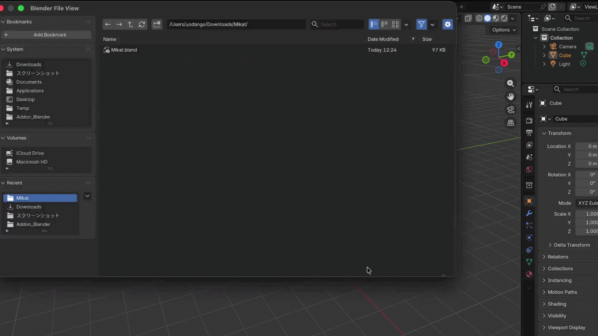

Blender add-on
Project Save Overwrite Warning
Get a popup warning before overwriting an existing Blender project file.

Features
- SafeConfirms before you accidentally overwrite a file.
- SmartNormal quick saves (Ctrl+S) stay completely silent.
- SmoothCancelling the warning safely returns you to the same folder.
Requirements & limits
Requirements
Requires Blender 4.2 or later. Works on Windows and macOS. Linux should work but is untested.
Limitations
This add-on only supports .blend files. Due to technical limitations, it does not warn you when exporting other formats (FBX, OBJ, PNG, …), or when saving through the "Save changes before closing?" dialog shown when you quit Blender.
Install
- Download the .py file on the right.
- In Blender, open Edit ▸ Preferences ▸ Add-ons.
- Open the ▾ menu at the top-right, choose "Install from Disk…", then pick the .py file.
- Turn the add-on on with its checkbox.
Install it, and never accidentally lose your old iterations again.
Project Save Overwrite Warning
Blender add-on
Version1.1.0
Blender4.2+
OSWin / macOS
Free and open. Everything runs locally in Blender — nothing is uploaded.